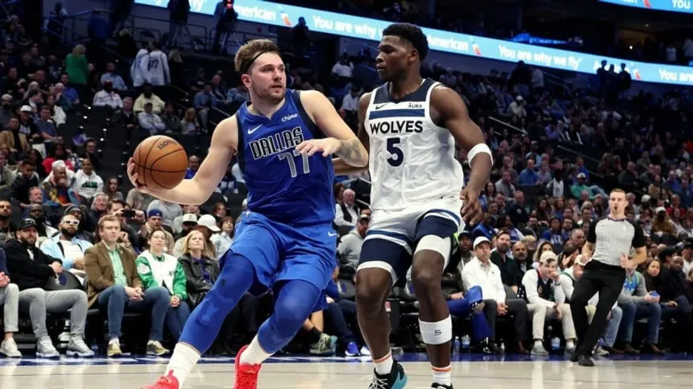

Playoffs de la NBA en vivo: cómo ver Minnesota Timberwolves vs Dallas Mavericks por la final de conferencia
Arrancan este martes las finales de la Conferencia Oeste de la NBA. Horario, TV, streaming y todos los detalles
MIÉRCOLES 22 DE MAYO DE 2024 16:59

Playoffs de la NBA en vivo: cómo ver Minnesota Timberwolves vs Dallas Mavericks por la final de conferencia
La temporada 2023/2024 de la NBA entró en etapa definitoria, y en el marco de los Playoffs quedaron determinadas las finales de conferencia, que tras su inicio el martes, este miércoles continúan con un parido.
La serie del Oeste se inicia en el mítico se inicia en Minnesota, donde los Timberwolves reciben al Dallas Mavericks de Luka Doncic.
Playoffs de la NBA: horario y TV de Minnesota Timberwolves vs Dallas Mavericks
Final de la Conferencia Oeste
Minnesota Timberwolves vs Dallas Mavericks (0-0) - 21.30 horas de la Argentina por Star+ y NBA League Pass.
TV y streaming para ver la NBA
ESPN: Canales 103 de Flow, Canales 621 (SD) y 1621 (HD) de DirecTV, Canales 105 (SD) y 1011 (HD) de Telecentro
ESPN 2: Canales 102 de Flow, Canales 622 (SD) y 1622 (HD) de DirecTV, Canales 104 (SD) y 1009 (HD) de Telecentro
ESPN 3: Canales 104 de Flow, Canales 623 (SD) y 1623 (HD) de DirecTV, Canales 1012 (HD) de Telecentro
STAR+: El servicio de streaming que ofrece ESPN tiene dos maneras sencillas de contratarlo: en primer lugar, por $1749 mensuales, y la otra opción, es adquiriéndolo de manera anual a cambio de $14.692.
NBA League Pass: tiene un costo que arranca desde U$S 99,99 anuales o U$S 14,99 por mes y se puede acceder a todos los partidos de fase regular y playoffs de la NBA 2023-24.
Calendario de las finales de conferencia de la NBA
Todas las series se juegan al mejor de siete partidos, por lo que el primer equipo que triunfe en cuatro encuentros será el ganador de la fase. Por eso, los partidos 5, 6 y 7 son condicionales.
Conferencia Este: Boston Celtics - Indiana Pacers
Final 1: Boston Celtics vs. Indiana Pacers, el martes 21 de mayo a las 21 por ESPN 2 y Star+.
Final 2: Boston Celtics vs. Indiana Pacers, el jueves 23 de mayo a las 21 por ESPN 2 y Star+.
Final 3: Indiana Pacers vs. Boston Celtics, el sábado 25 de mayo a las 21.30 por ESPN 2 y Star+.
Final 4: Indiana Pacers vs. Boston Celtics, el lunes 27 de mayo a las 21.30 por ESPN 2 y Star+.
Final 5: Boston Celtics vs. Indiana Pacers, el miércoles 29 de mayo a las 21 por ESPN 2 y Star+.
Final 6: Indiana Pacers vs. Boston Celtics, el viernes 31 de mayo a las 21 por ESPN 2 y Star+.
Final 7: Boston Celtics vs. Indiana Pacers, el domingo 2 de junio a las 21 por ESPN 2 y Star+.
Conferencia Oeste: Minnesota Timberwolves - Dallas Mavericks
Final 1: Minnesota Timberwolves vs. Dallas Mavericks, el miércoles 22 de mayo a las 21.30 por Star+.
Final 2: Minnesota Timberwolves vs. Dallas Mavericks, el viernes 24 de mayo a las 21.30 por Star+.
Final 3: Dallas Mavericks vs. Minnesota Timberwolves, el domingo 26 de mayo a las 21 por Star+.
Final 4: Dallas Mavericks vs. Minnesota Timberwolves, el martes 28 de mayo a las 21.30 por Star+.
Final 5: Minnesota Timberwolves vs. Dallas Mavericks, el jueves 30 de mayo a las 21.30 por Star+.
Final 6: Dallas Mavericks vs. Minnesota Timberwolves, el sábado 1 de junio a las 21.30 por Star+.
Final 7: Minnesota Timberwolves vs. Dallas Mavericks, el sábado 3 de junio a las 21.30 por Star+.